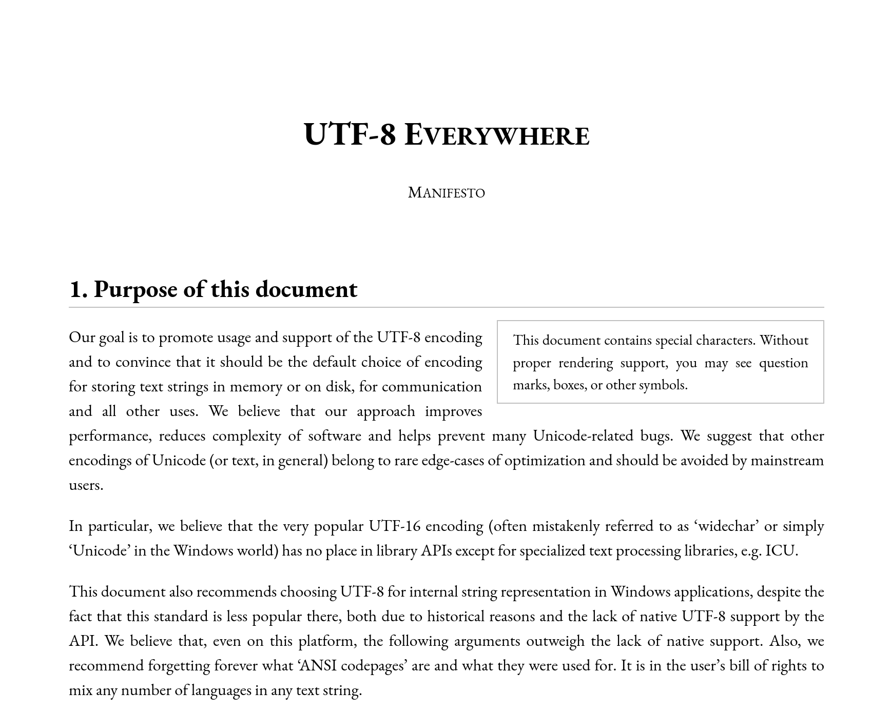

UTF-8 Everywhere

На неделе вспомнил про wchar_t в Си, пока в очередной раз работал с Unicode, но в Windows. Штука… Неоднозначная.
Часть WinAPI жёстко завязана на WCHAR (wchar_t). Но в Windows он до сих пор определён размером в 16 бит. Тот же GCC на Debian мне говорит, что у него wchar_t – все 32 бита.
Т.е. перевод строки из char в wchar_t генерирует валидный UTF-16 в Windows, но UTF-32 в Linux…
Кажется, char32_t должен решить эту чехарду в будущем… Хотя бы с точки зрения размерности… Пусть это и не исправит проблемы WinAPI…
Но действительно ли так часто нужно работать с полноценным code point в Unicode? Зачем? Только чтобы посчитать общее количество символов? Это же просто сделать и на основе char!
Авторы UTF-8 Everywhere дают развёрнутый ответ на этот и многие другие вопросы. Идея хорошо проработана, есть даже прекрасный FAQ для любопытных.
На этой веб-странице собрали самые веские доводы для использования исключительно UTF-8. Везде. Всегда.